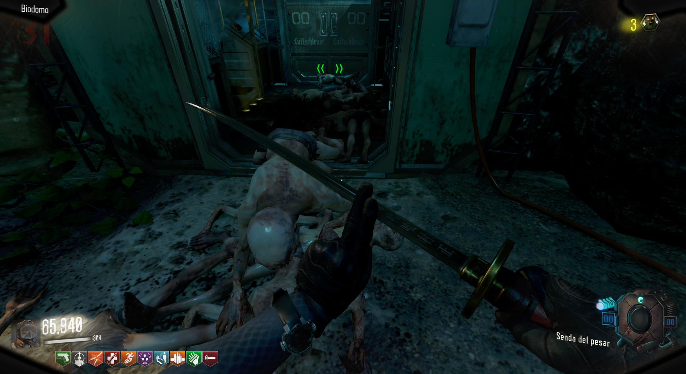
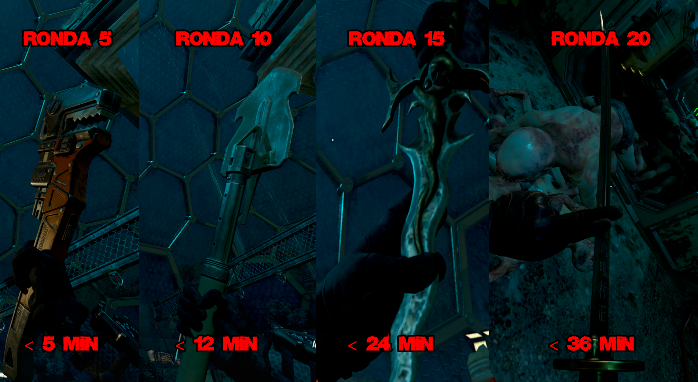
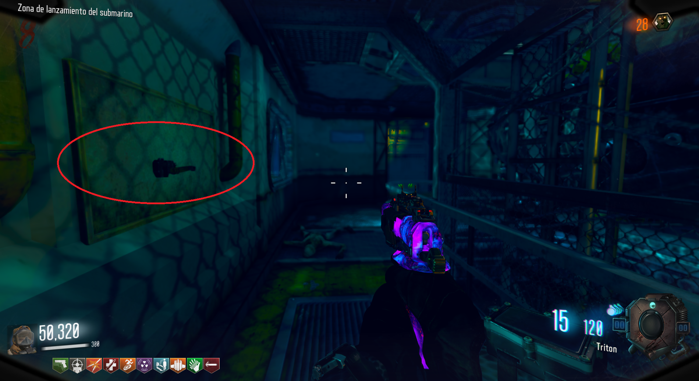

Armas Secretas (Leviathan)

Contrareloj:
Necesitaremos COMPLETAR las rondas 5, 10, 15 y 20 en sus respectivos tiempos, 5, 12, 24 y 36 minutos.

Cada vez que conseguimos un arma, la podremos ir a buscar a esta pared en la zona del Submarino.
